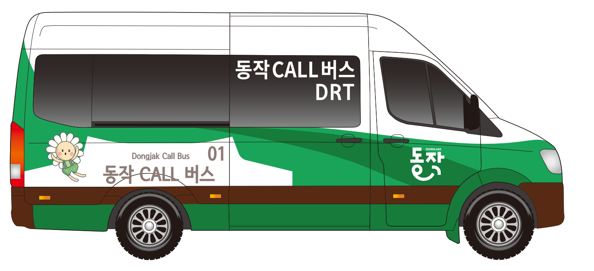

승훈 팀장님, 요청하신 대로 안드로이드 및 기타 접속 시의 기본 연결 페이지를 **https://user-goji.vercel.app/**로 변경하고, '코드 깜빡임' 현상을 방지하는 최적화 코드를 다시 구성했습니다.
아이폰 사용자는 기존처럼 앱스토어로 연결되고, 그 외의 모든 접속(안드로이드, PC 등)은 말씀하신 새 링크로 이동하게 됩니다.
🛠️ 최종 수정 코드 (index.html)
아래 코드를 복사하여 깃허브의 index.html 내용을 전체 교체해 주세요.
HTML
동작구 DRT 앱 다운로드
